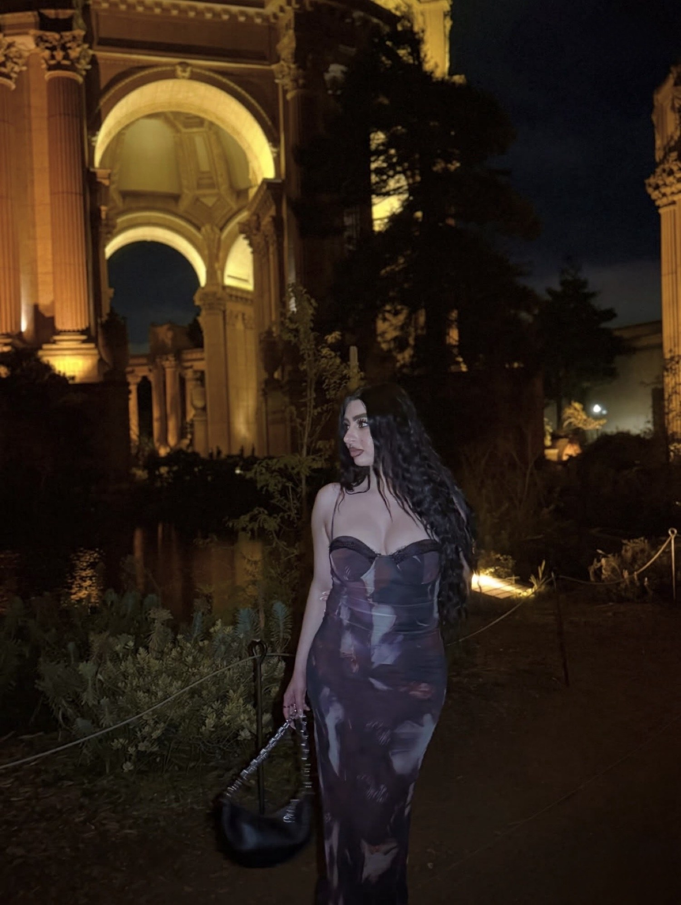
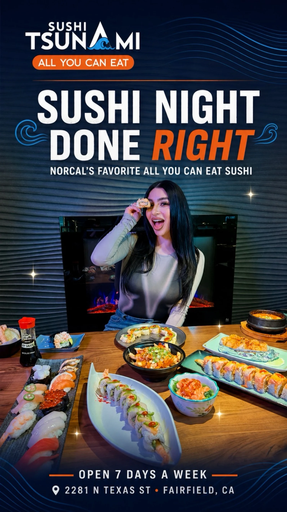
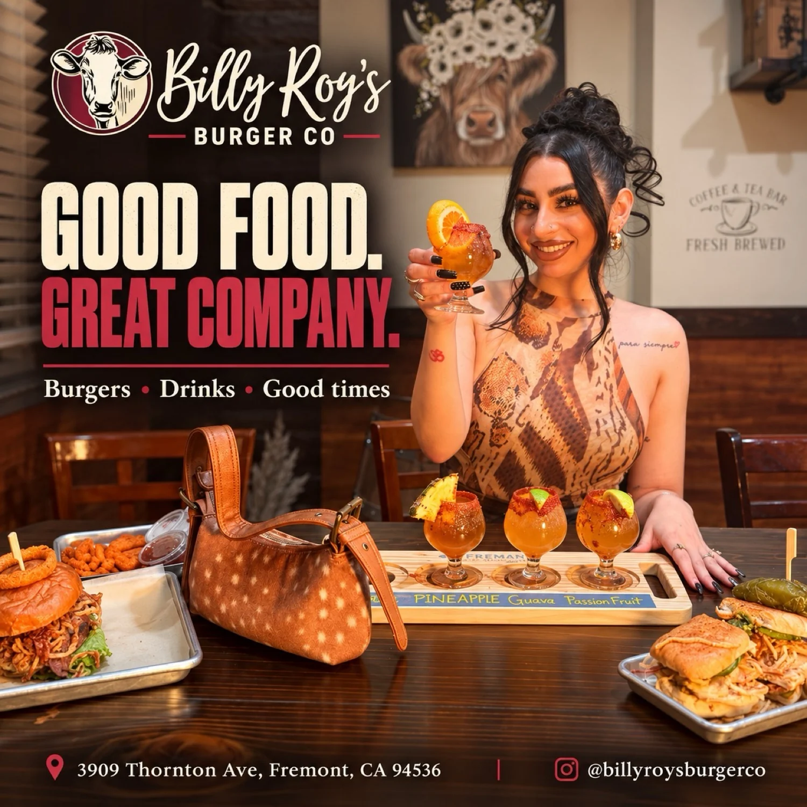
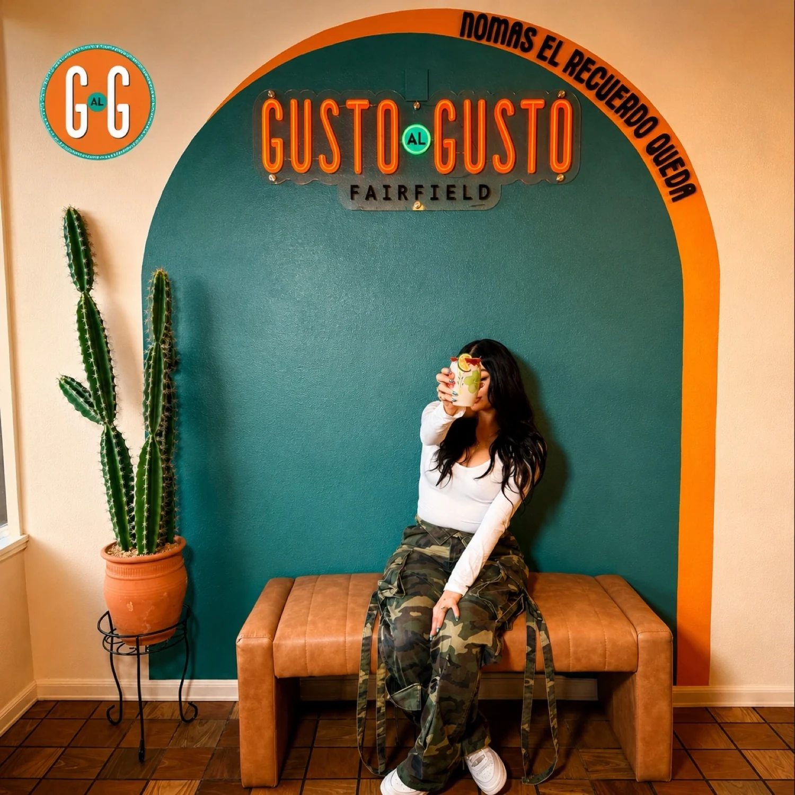
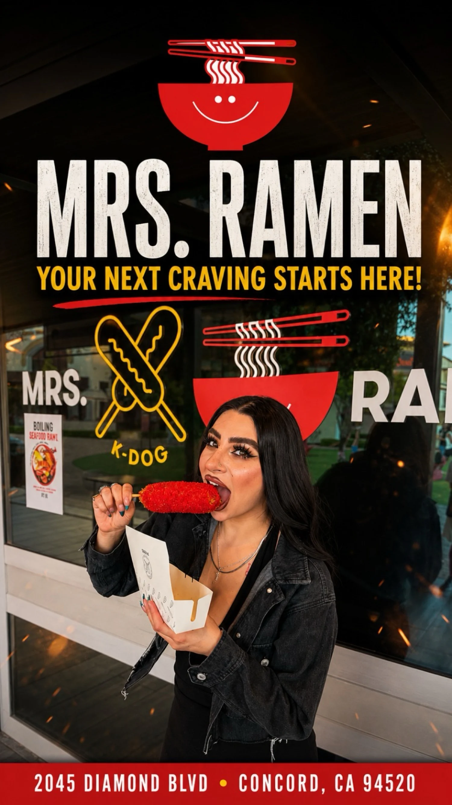

@velvetfyxx
[TO CONFIRM — followers & engagement from Instagram Insights]
Brand & partnerships
Media Kit
Model · Actress · Creative Director — San Francisco

Meet Maria
The world of Velvet Fyxx
“Polished, aesthetic stories that feel like an evening out.”
Maria Marron is a model, actress and creative director based in San Francisco. Working as Velvet Fyxx, she directs and stars in her own content, turning hotel stays, dining nights and city landmarks into polished, aesthetic stories that feel like an evening out.
Her world is after-dark San Francisco: warm light on marble, a table set for the night, a look built for the room. She has modeled for hospitality brands and brings that on-camera discipline to every feature — composed, cinematic, unmistakably glam. Travel commissions, including Los Angeles, by arrangement.
01
Fashion
02
Beauty
03
Luxury
04
Lifestyle
05
San Francisco
Services
What I create
Short-form video, stills, modeling and full campaign features for houses of style — and the hotels and dining rooms that set the scene.
UGC-style video
Sponsored posts
Modeling
Campaigns
Events & appearances
Reels & carousels
Hotel-stay features
Dining features
Ways to work together
Select collaborations
- 01
Curated gifting
By invitation, for houses whose product belongs in her world. Features are never guaranteed.
- 02
Hosted stays & tastings
A private stay or chef’s table, documented as a defined editorial content suite.
- 03
Appearances
Openings, launches and private evenings — presence, styling and coverage.
- 04
Commissioned partnerships
Bespoke campaigns with defined deliverables, usage and timing.
Portfolio
Selected work
Hilton Garden Inn
Fogão Gaúcho

Sushi Tsunami

Billy Roy’s

Gusto al Gusto

Mrs. Ramen
Has appeared in hotel and dining shoots with Crenshaw Visuals for Hilton, Omni and Fogão Gaúcho. Campaign performance and further references are shared privately with qualified inquiries.
Social
Audience snapshot
Handles are current. Follower counts and audience insights will be added once they are confirmed from Instagram Insights and TikTok Analytics — they are not estimated here.
TikTok
@velvetfyxx
[TO CONFIRM — followers & views from TikTok Analytics]
Top locations
[TO CONFIRM — from Instagram Insights]
Age & reach
[TO CONFIRM — from Instagram Insights]
Let’s create
Work with Maria
Hotels, restaurants, beauty, fashion, jewelry and lifestyle houses — reach out for gifting, hosted features, appearances and commissioned campaigns.
mariamarronbusiness@gmail.com · San Francisco, California